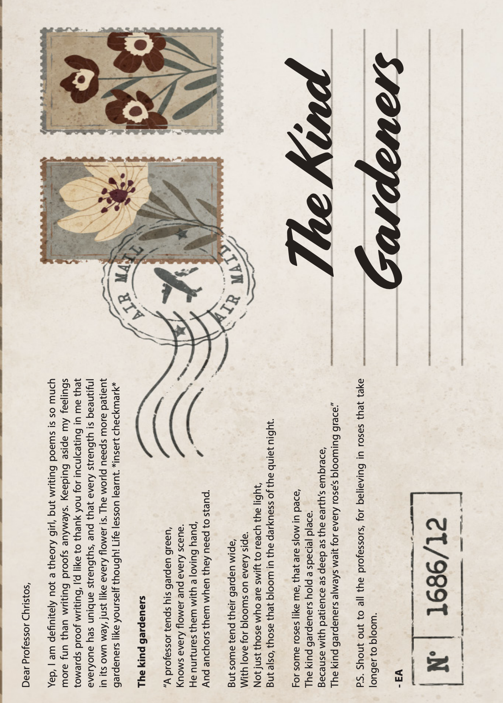

To The Kind Gardeners
fragment
A professor tends his garden green,
Knows every flower and every scene.
He nurtures them with a loving hand,
And anchors them when they need to stand.
But some tend their garden wide,
With love for blooms on every side.
Not just those who are swift to reach the light,
But also, those that bloom in the darkness of the quiet night.
For some roses like me, that are slow in pace,
The kind gardeners hold a special place.
Because with patience as deep as the earth's embrace,
The kind gardeners always wait for every rose's blooming grace.
Knows every flower and every scene.
He nurtures them with a loving hand,
And anchors them when they need to stand.
But some tend their garden wide,
With love for blooms on every side.
Not just those who are swift to reach the light,
But also, those that bloom in the darkness of the quiet night.
For some roses like me, that are slow in pace,
The kind gardeners hold a special place.
Because with patience as deep as the earth's embrace,
The kind gardeners always wait for every rose's blooming grace.
P.S. Shout out to all the professors, for believing in roses that take longer to bloom.
- EA
- EA
Published in CMU Student Magazine
